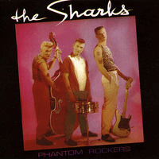

the Sharks - Phantom Rockers (Album, 1983)
01 - Moonstomp (Do What You Want) (2:06)
02 - Skeleton Rock (3:22)
03 - It's All Over Now (3:51)
04 - Crazy Maybe (3:28)
05 - Take A Razor To Your Head (2:10)
06 - Death Row (3:04)
07 - Love Bites (3:22)
08 - Short Shark Shock (2:05)
09 - Ruff Stuff (1:50)
10 - Phantom Rockers (3:24)
11 - Charlie! (2:08)
12 - Slipped Disc (2:29)
13 - I Can't Stop (1:59)
14 - Electrifyin' (3:37)
15 - Ghost Train (2:57)
16 - We Say Yeah (2:06)
© Nervous Records :: 1991 [NERCD 008] 1983 [NERD 008]
Notes
United Kingdom, England.
Steve Whitehouse - Vocals, Double Bass
Paul Hodges - Drums, Vocals
Alan Wilson - Guitar, Vocals
Producer - Denis Mann, Pete Diamond
Voice - Nicola, Roy Williams on track 13
Songs are written-by Wilson: "Take A Razor To Your Head", "Death Row", "Charlie!", "I Can't Stop"
Songs are written-by Whitehouse: "Skeleton Rock", "Crazy Maybe", "Short Shark Shock", "Ghost Train"
Songs are written-by Wilson/Whitehouse and Whitehouse/Wilson: "Ruff Stuff", "Slipped Disc"
Songs are written-by Wilson/Hodges: "Moonstomp (Do What You Want)"
Songs are written-by Whitehouse/Hodges: "Phantom Rockers", "Electrifyin'"
Songs are written-by Lusby/Hodges/Wilson/Whitehouse: "Love Bites"
Songs is written-by Womack: "It's All Over Now"
Songs is written-by Gormley/Welch/Marvin: "We Say Yeah"
reference information: Discogs®
Review
008/366 (Project 366)
How shades of authentic rockabillies goes mad! The Sharks are about stylish sound with looney tunes, psychobilly with a huge taste of rockabilly itself. With the sound of own look. Clearly audible double bass, cool guitar rhythm. All this with dangling tune and grunting melody. From time to time with inserts of great floppy sound and sloppy rattle. Always with strict rhythm and bass walking, with speed swings and with an eccentric crazy vocals. Lace and wild-wild mocking. And especially I like the sound of gigling guitar. Also that the sound is based on 'fifties' and on actual understanding. Sweet.
Album "Phantom Rockers" features confident equanimity in a psycho form. What is surprisingly cool. An unflappable sound and always a little freaky. However, the lyrics are with fairly sensible pieces. There are so many sure hits that it is impossible to highlight only some of them. In addition, that sound is likely close to (neo)Rockabilly greatness. Due to what you can meet some experiments with sound.
The review is still in the process of writing for technical reasons.